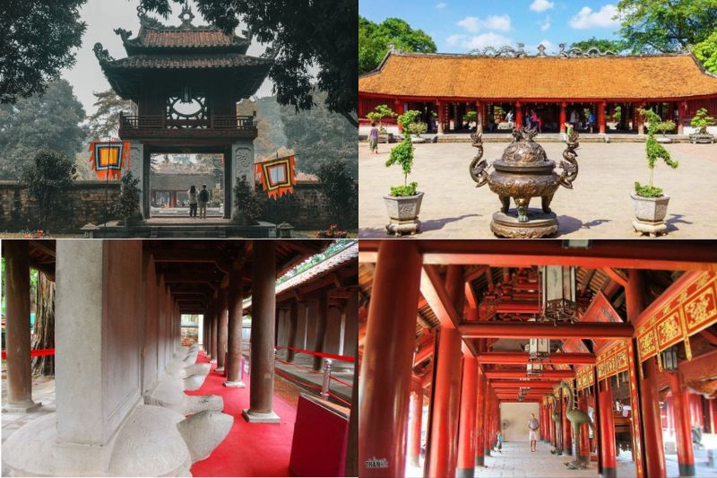
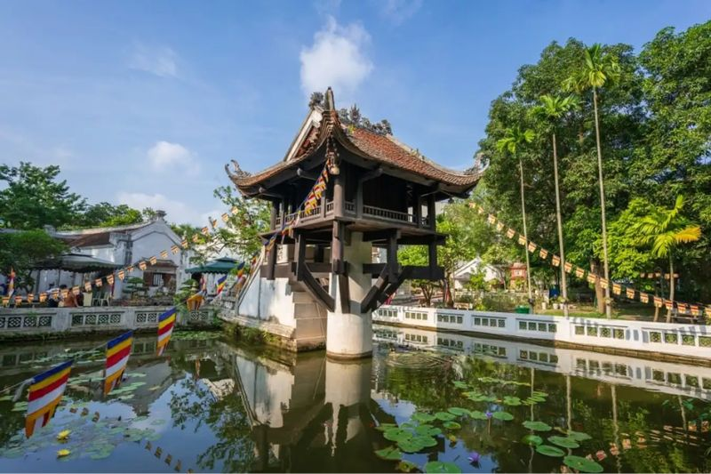
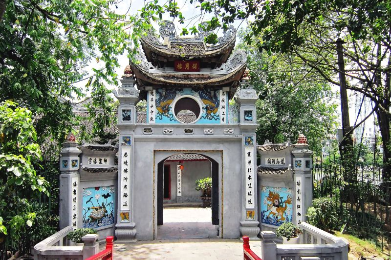
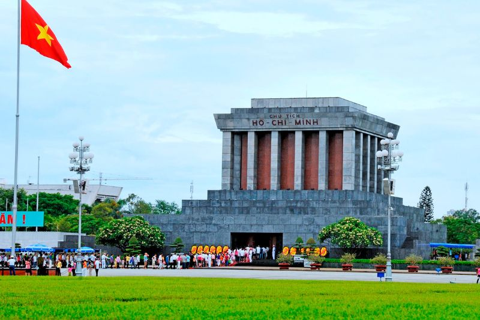
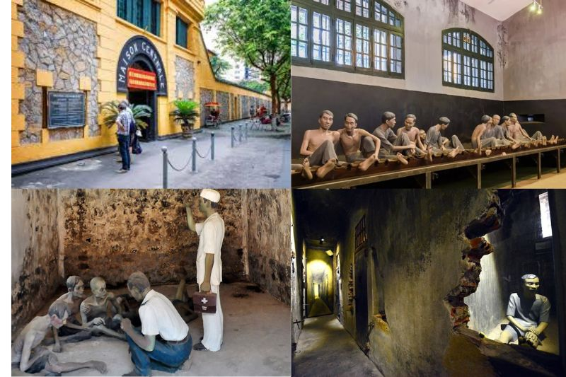
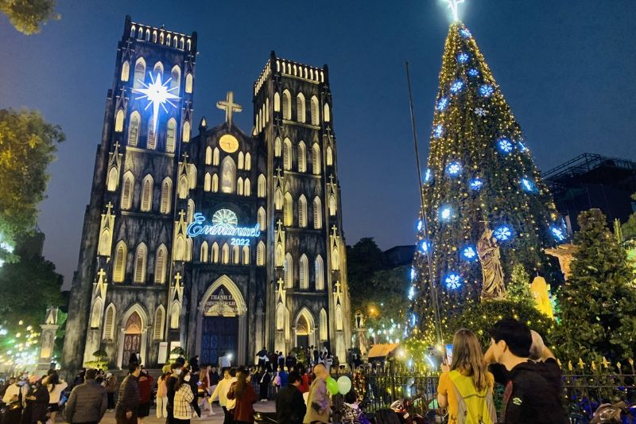

Hà Nội – thủ đô ngàn năm văn hiến, không chỉ là trung tâm chính trị, kinh tế, văn hóa của Việt Nam mà còn là kho tàng lịch sử với nhiều di tích cổ kính và giàu giá trị văn hóa. Những di tích lịch sử Hà Nội là những chứng nhân của thời gian, phản ánh những giai đoạn thăng trầm và những câu chuyện hào hùng của dân tộc.
Danh sách những di tích lịch sử Hà Nội
Hoàng thành Thăng Long
Hoàng Thành Thăng Long là khu di tích lịch sử Hà Nội được xây dựng từ thế kỷ thứ VII, dưới triều đại Đinh-Tiền Lê sau đó phát triển mạnh ở thời Lý, Trần, Lê và triều Nguyễn. Đây là quần thể công trình kiến trúc đồ sộ và là di tích quan trọng bậc nhất trong hệ thống các di tích Việt Nam. Hoàng Thành Thăng Long đã trải qua nhiều biến cố lịch sử và trở thành một phần không thể thiếu của lịch sử dân tộc

Hoàng Thành Thăng Long có diện tích rộng lớn, bao gồm nhiều công trình kiến trúc độc đáo như Cột cờ Hà Nội, Điện Kính Thiên, Đoan Môn và Hậu Lâu. Mỗi công trình đều mang trong mình những giá trị văn hóa và lịch sử đặc biệt, phản ánh sự phát triển của nghệ thuật kiến trúc và văn hóa Việt Nam qua các thời kỳ.
Hoàng Thành Thăng Long đã được UNESCO công nhận là di sản văn hóa của thế giới. Là nơi ghi dấu rất nhiều những sự kiện lịch sử quan trọng của dân tộc. Đối với những người yêu giá trị văn hóa truyền thống, đây là địa điểm vô cùng thú vị để khám phá, tìm tòi những minh chứng chân thực và sống động nhất. Không chỉ thế, với khung cảnh đẹp và giàu giá trị nhân văn, mỗi ngày tại khu di tích này còn đón rất nhiều các bạn học sinh, sinh viên tới chụp ảnh kỷ yếu trước khi ra trường hay tham quan để học hỏi thêm các kiến thực về lịch sử dân tộc.
Văn Miếu – Quốc Tử Giám
Văn Miếu – Quốc Tử Giám là một trong những địa điểm du lịch nổi tiếng của Hà Nội thu hút rất nhiều du khách trong và nước. Nếu nói đây cũng là biểu tượng của Hà Nội thì quả thật không sai.
Văn Miếu được xây dựng vào năm 1070 (đời vua Lý Thánh Tông) là nơi thờ các thánh hiền đạo nho. Năm 1076, Lý Nhân Tông lập thêm Quốc Tử Giám ở phía sau, ban đầu là nơi học của các hoàng tử, sau mở rộng thu nhận cả những học trò giỏi trong thiên hạ. Văn Miếu là nơi thờ Khổng Tử và các bậc hiền triết, trong khi Quốc Tử Giám là trường đại học đầu tiên của Việt Nam, nơi đào tạo nhiều nhân tài cho đất nước.
Quần thể kiến trúc nơi đây bao gồm: hồ Văn, khu Văn Miếu – Quốc Tử Giám và vườn Giám. Trong đó, kiến trúc chủ thể là Văn Miếu và Quốc Tử Giám. Với hơn 700 năm hoạt động, đã đào tạo hàng nghìn nhân tài cho đất nước, Quốc Tử Giám được coi như là trường đại học đầu tiên của Việt Nam và cũng là biểu tượng cho nền khoa cử thời phong kiến. Mỗi bia Tiến sĩ là một tấm bia đá khắc tên các Tiến sĩ đỗ đạt qua các kỳ thi Đình, thể hiện sự tôn vinh và ghi nhận công lao của những người có công trong học vấn và quản lý đất nước.
Hằng năm, vào những mùa thi cử, các sĩ tử từ khắp nơi đổ về di tích lịch sử ở Hà Nội này để sờ đầu rùa, thắp hương và cầu cho đường học hành thuận lợi, thi cử đỗ đạt. Đặc biệt, vào Rằm Nguyên Tiêu, tại Văn Miếu thường diễn ra ngày hội Thơ Việt Nam vô cùng trang trọng trong không khí sắc xuân tràn đầy.
Chùa Một Cột
Tọa lạc tại phố Chùa Một Cột, Đội Cấn, quận Ba Đình, Hà Nội. Chùa Một Cột từ lâu đã trở thành biểu tượng của văn hóa Việt Nam. Tương truyền, ngôi chùa này được xây dựng dựa trên “giấc mộng Quan Âm” của vua Lý Thái Tổ. Chùa chỉ có một gian được đặt trên một trụ giữa hồ sen. Điểm nhấn của ngôi chùa nằm ở họa tiết và kiến trúc độc đáo trông như một bông sen trên mặt nước, dân gian quen gọi là chùa Một Cột.
Trải qua những năm tháng chiến tranh trường kỳ, ngôi chùa này đã bị hư hại rất nhiều. Năm 1955, chùa được phục dựng dựa trên kiến trúc cổ vốn có và tồn tại cho đến ngày nay. Chùa Một Cột có kiến trúc độc đáo với ngôi chùa nhỏ nằm trên một cột đá, biểu tượng của bông sen nở giữa hồ nước. Đây là một trong những công trình kiến trúc Phật giáo độc đáo nhất của Việt Nam, thể hiện sự giao hòa giữa kiến trúc và thiên nhiên, và mang đậm nét văn hóa tâm linh của người Việt.
Chùa Một Cột là điểm đến tâm linh quan trọng của Hà Nội. Du khách đến đây không chỉ để chiêm ngưỡng kiến trúc độc đáo mà còn để cầu mong bình an, may mắn và sức khỏe. Chùa Một Cột cũng là một trong những địa điểm được nhiều du khách quốc tế yêu thích khi đến thăm Hà Nội.
Hồ Hoàn Kiếm và Đền Ngọc Sơn
Hồ Hoàn Kiếm và Đền Ngọc Sơn nằm ngay trung tâm của Thủ Đô Hà Nội. Đây luôn là địa điểm nằm trong danh sách những danh lam thắng cảnh và di tích lịch sử Hà Nội mà du khách không thể bỏ qua.
Hồ Hoàn Kiếm trước đây có tên gọi là hồ Lục Thủy hay hồ Thủy Quân. Bởi đây từng là nơi vua dùng để huấn luyện thủy binh chiến đấu. Tuy nhiên, đến thế kỷ XV, hồ đã được đổi tên thành Hồ Gươm, vì gắn liền với sự tích vua Lê Lợi trả gươm báu cho Rùa vàng. Quần thể hồ còn có tháp Bút, đài Nghiên, cầu Thê Húc và đền Ngọc Sơn.
Hiện tại, Hồ Hoàn Kiếm là nơi để mọi người thư giãn, đi dạo, hóng mát và nơi sinh hoạt văn hóa của người dân địa phương. Đây cũng là địa điểm được giới trẻ yêu thích vào mỗi cuối tuần khi tuyến phố đi bộ diễn ra (từ thứ Sáu tới Chủ nhật hàng tuần).
Lăng Chủ tịch Hồ Chí Minh
Lăng Chủ tịch Hồ Chí Minh (hay Lăng Hồ Chủ tịch, Lăng Bác) là nơi gìn giữ thi hài Chủ tịch Hồ Chí Minh. Lăng được chính thức khởi công ngày 2/9/1973 và được khánh thành vào ngày 29/8/1975, tại vị trí của lễ đài cũ giữa Quảng trường Ba Đình, nơi Bác Hồ từng chủ trì các cuộc gặp gỡ.
Việc xây dựng Lăng được thực hiện với sự hỗ trợ của các chuyên gia và kỹ sư từ Liên Xô cũ (Nga ngày nay). Dự án gặp nhiều khó khăn trong việc vận chuyển vật liệu và điều kiện thời tiết, nhưng cuối cùng đã được hoàn thành đúng thời hạn. Nội thất của Lăng Chủ Tịch Hồ Chí Minh được thiết kế để tôn vinh sự đơn giản và trang nghiêm. Các bức tường được làm từ đá granit và các yếu tố trang trí khác được thực hiện một cách tinh tế, giữ cho không gian trong lăng luôn trang trọng và đầy tôn nghiêm.
Lăng Chủ Tịch Hồ Chí Minh không chỉ là nơi lưu giữ thi hài của vị lãnh tụ mà còn là địa điểm để tưởng niệm và tri ân những đóng góp của ông cho dân tộc. Nơi đây thu hút hàng triệu du khách mỗi năm, không chỉ từ Việt Nam mà còn từ quốc tế. Việc thăm lăng không chỉ là một hoạt động du lịch mà còn là dịp để thể hiện lòng kính trọng và tưởng nhớ.
Đặc biệt, nếu ngày 19/5, 2/9 và Mồng 1 Tết Nguyên án trùng vào Thứ Hai hoặc Thứ Sáu, vẫn tổ chức lễ viếng Chủ tịch Hồ Chí Minh. Khách viếng thăm buộc phải tuân theo những yêu cầu như ăn mặc chỉnh tề, giữ trật tự và không đem các thiết bị điện tử ghi hình khi viếng thăm Lăng Bác.
Nhà tù Hỏa Lò
Được xây dựng vào cuối thế kỷ 19 và hoạt động từ thời Pháp thuộc cho đến sau khi Việt Nam giành độc lập, nhà tù Hỏa Lò đã chứng kiến nhiều giai đoạn lịch sử và là nơi giam giữ các tù nhân chính trị và chiến sĩ yêu nước. Hiện nay, nhà tù Hỏa Lò là một điểm tham quan lịch sử quan trọng, thu hút nhiều du khách và là nơi ghi nhớ những đau thương, mất mát trong quá khứ.
Nhà tù được thiết kế theo kiểu kiến trúc Pháp thuộc với các tường bao dày, cổng sắt chắc chắn và nhiều phòng giam nhỏ. Công trình bao gồm ba khu chính: khu giam giữ tù nhân chính trị, khu giam giữ tù nhân hình sự, và khu quản lý. Các phòng giam thường được thiết kế kín đáo, thiếu ánh sáng và không thông gió.
Nhà tù Hỏa Lò ngày nay đã trở thành một di tích lịch sử Hà Nội quan trọng và là điểm đến du lịch phổ biến tại Hà Nội. Ngoài ra, đây còn là một địa điểm du lịch hấp dẫn mà còn là nơi giáo dục về lịch sử và di sản văn hóa của Việt Nam.
Nhà thờ lớn Hà Nội
Nhà thờ Lớn Hà Nội, chính thức được gọi là Nhà thờ Chính tòa Thánh Giuse, là một trong những công trình kiến trúc nổi bật và biểu tượng văn hóa của thủ đô Hà Nội. Được xây dựng vào cuối thế kỷ 19, nhà thờ không chỉ là một địa điểm tôn giáo quan trọng mà còn là một điểm đến thu hút du khách với vẻ đẹp kiến trúc và lịch sử phong phú.
Công trình được thiết kế bởi kiến trúc sư người Pháp, Bourard, và mang đậm phong cách kiến trúc Gothic của châu Âu, với các yếu tố như mái vòm nhọn, cửa sổ hình vòm và các trụ cột cao lớn. Đây là nhà thờ đầu tiên được xây dựng tại Hà Nội và là nơi hành lễ của cộng đồng Công giáo.
Nhà thờ Lớn Hà Nội không chỉ là trung tâm tôn giáo của cộng đồng Công giáo mà còn là một biểu tượng văn hóa quan trọng của Hà Nội. Nhà thờ thường xuyên tổ chức các lễ nghi tôn giáo, bao gồm các buổi lễ Thánh lễ, các nghi thức đặc biệt và các sự kiện cộng đồng. Ngoài ra, nhà thờ cũng là một điểm đến du lịch hấp dẫn, thu hút nhiều du khách trong và ngoài nước. Với vẻ đẹp kiến trúc ấn tượng và không gian yên tĩnh, nhà thờ là nơi lý tưởng để tìm hiểu về lịch sử và văn hóa của Hà Nội.